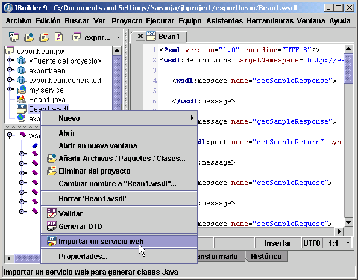

Ésta es una función de JBuilder Enterprise.
Aunque resulta útil entender la tecnología subyacente de los servicios web, JBuilder proporciona asistentes y herramientas que permiten su rápido desarrollo y consumo. JBuilder utiliza diversos kits de herramientas para servicios web. Cuando se selecciona un kit de herramientas, los asistentes de JBuilder lo utilizan para habilitar proyectos de servicios web, importar servicios y exportar clases Java como servicios web.
Para exportar Enterprise JavaBeans (EJB) como servicios web en JBuilder sólo es necesario configurar el proyecto para servicios web. Basta con desarrollar la aplicación EJB de la forma acostumbrada, configurar el proyecto para servicios web con el Asistente para configuración de servicios web y ejecutar el proyecto con la configuración de ejecución del servidor de servicios web creada por el asistente. Por defecto, JBuilder expone automáticamente todos los beans sesión sin estado con métodos empresariales en la interfaz remota. También se puede modificar este comportamiento por defecto y seleccionar únicamente los módulos, beans y métodos del Enterprise JavaBean que se deseen exponer como servicios web.
Entre las funciones de servicios web de JBuilder que varían según el kit de herramientas utilizado se incluyen:

Si desea más información, consulte:
Guía del desarrollador de servicios web: Introducción
Ejemplos de servicios web: <jbuilder>/samples/webservices/